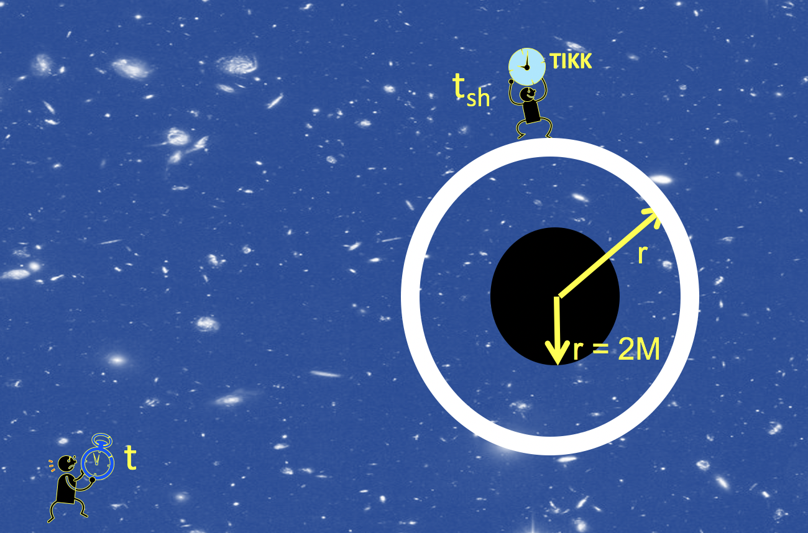

Forrige side🙂 🙁3 observatørerPADLET

Men la du merke til en ting her: $$\Delta t_\mathrm{sh}^2-\Delta r_\mathrm{sh}^2-r^2\Delta\phi_\mathrm{sh}^2=\sst\Delta t^2-\frac{\Delta r^2}{\sst}-r^2\Delta\phi^2$$ Vi trenger strengt tatt ikke at de to tikkene er på samme ϕ-posisjon!. Som vi allerede har snakket om så er ϕ-delen av geometrien (ϕ-leddet i Δs) helt lik i Lorentz og ß-geometri som vi ser av uttrykket her. Dermed er også ϕ = ϕsh. Dermed trenger vi ikke kreve at Δϕ = 0. Siden Δϕ = Δϕsh så forkortes dette leddet bort på begge sider. Dermed er resultatet gyldig for alle tidsintervaller mellom eventer som foregår på det samme skallet.